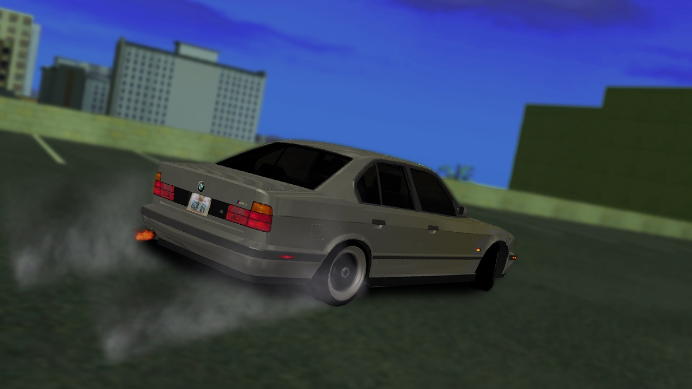

Az E34 sorozatot, amely a nagy sikerű E28-at volt hivatott leváltani, 1988 februárjában mutatták be. Eleinte négy, soros hathengeres (M20) motorral (20i, 25i,) ill. M30 (30i, 35i),
majd egy hónappal később a 2,4-es turbódízellel. A V8-as M60-as motort csak relatíve későn, 1992 szeptemberében kapta meg.